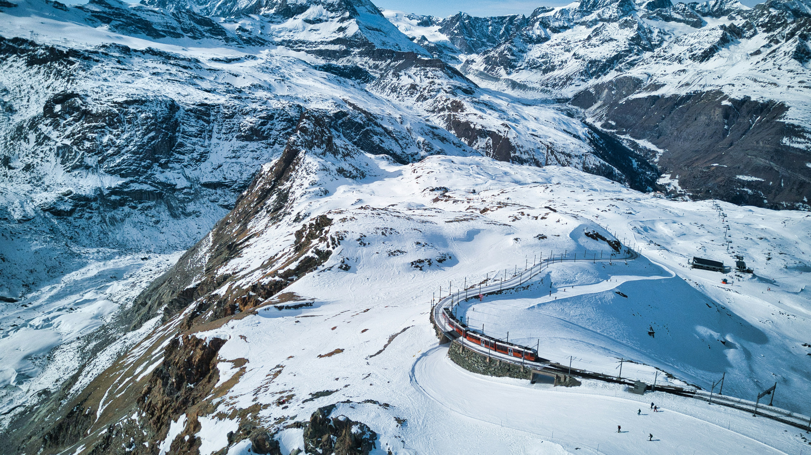
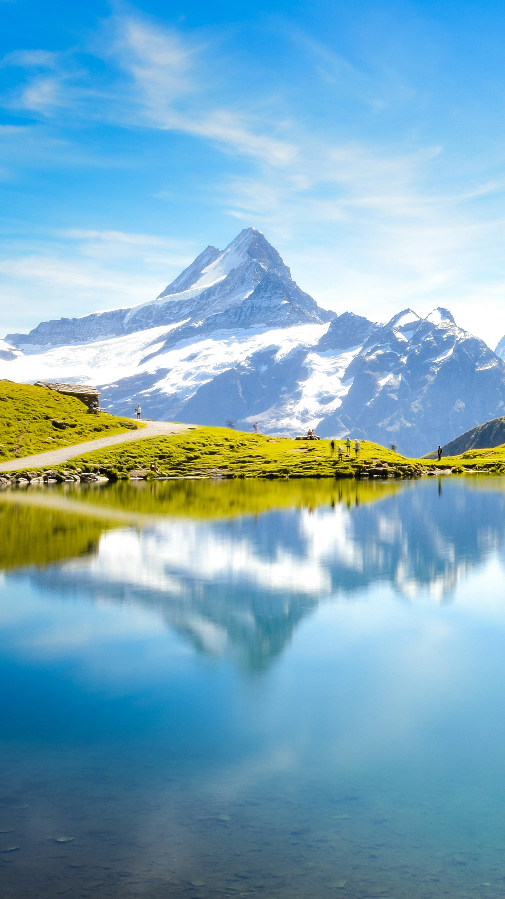

1. Visit the Matterhorn

The Matterhorn is one of the most recognizable mountains in the world with its nearly symmetrical pyramidal peak. Standing at 4,478 meters (14,692 feet), this iconic mountain is the symbol of Switzerland and the centerpiece of your Zermatt experience.
While climbing the Matterhorn is for experienced mountaineers only, there are plenty of viewing opportunities for everyone. The mountain's distinctive peak is visible from many locations in Zermatt, but the most spectacular views come from dedicated viewpoints accessible by cable cars and mountain railways.
What makes it special: The Matterhorn is not just a mountain—it's a Swiss national symbol. Its perfect pyramid shape and the way it stands alone make it uniquely photogenic. The mountain changes appearance throughout the day as light shifts across its faces, offering different perspectives from sunrise to sunset.
Best Viewpoints: Gornergrat, Rothorn, or Matterhorn Glacier Paradise
Best Time: Early morning for the best light and fewer clouds
Tip: The north face of the Matterhorn is best photographed from Zermatt village, while the east and south faces are viewed from Gornergrat or the Matterhorn Glacier Paradise.
2. Ride the Gornergrat Railway
The Gornergrat Railway is Europe's highest open-air railway, offering a breathtaking journey from Zermatt to the 3,089-meter (10,135 feet) summit of Gornergrat. This cog railway has been operating since 1898 and provides some of the most spectacular mountain views in Switzerland.
The 33-minute ride takes you through forests, alpine meadows, and rocky landscapes, crossing bridges and tunnels along the way. At the top, you'll find an observation platform with panoramic views of 29 peaks over 4,000 meters, including the Matterhorn, Monte Rosa, and the Gorner Glacier—the second-largest glacier in the Alps.
What makes it special: Beyond the incredible views, the Gornergrat Railway is an engineering marvel that has been running for over 120 years. The combination of historic railway technology with unparalleled alpine scenery makes this journey unforgettable.
Operating Hours: Year-round, with more frequent service in summer
Duration: 33 minutes one-way
Facilities at Top: Panoramic observation platforms, restaurants, shops, and a hotel
Tip: Purchase a round-trip ticket but consider hiking part of the way down to experience the alpine terrain up close.
3. Explore Matterhorn Glacier Paradise
Matterhorn Glacier Paradise is Europe's highest cable car station and mountain viewing platform, perched at an impressive 3,883 meters (12,739 feet) on the Klein Matterhorn. The journey to the top involves a series of cable cars, culminating in a ride on the "Matterhorn Glacier Ride"—a state-of-the-art cabin featuring panoramic views and a glass floor.
At the summit, you'll find Europe's highest viewing platform with 360° panoramas of the Swiss, Italian, and French Alps. The complex includes the Glacier Palace, an ice cave 15 meters below the surface featuring beautiful ice sculptures, a cinema lounge, a restaurant, and a year-round ski area.
What makes it special: This is the only place in Europe where you can ski year-round, thanks to the high altitude and glacier. The viewing platform offers the closest public viewing point to the Matterhorn and on clear days, you can see as far as Mont Blanc in France—Europe's highest peak.
Cable Car Time: Approximately 45 minutes from Zermatt to the summit
Altitude: 3,883 meters (12,739 feet)
Facilities: Viewing platform, Glacier Palace, restaurant, cinema lounge, ski area
Tip: Visit early in the morning when visibility is usually best and crowds are smaller. Bring warm clothing as temperatures at this altitude are cold year-round, even in summer.
4. Explore Car-Free Zermatt Village

Zermatt is one of Switzerland's most famous car-free villages, creating a peaceful alpine atmosphere that transports visitors back in time. The only vehicles allowed are electric taxis, buses, and small electric service vehicles, which helps maintain the village's fresh air and tranquil environment.
The charming village center features narrow streets lined with traditional chalets, luxury boutiques, fine restaurants, cozy cafés, and historic buildings. Bahnhofstrasse, the main street, offers excellent shopping and dining options. Don't miss visiting the Matterhorn Museum to learn about the mountain's history and the first ascent that ended in tragedy.
What makes it special: The absence of cars creates a unique atmosphere that combines old-world charm with modern alpine luxury. The village's location, nestled in a valley surrounded by some of the world's most impressive mountains, makes even a simple stroll through town a scenic experience.
Getting Around: By foot, electric taxi, or electric bus
Must-Visit: Matterhorn Museum, St. Mauritius Church, Kirchplatz (church square)
Shopping: Bahnhofstrasse for Swiss watches, chocolates, and outdoor gear
Tip: Visit the old village area of Hinterdorf with its traditional timber houses, barns, and stables, some dating back more than 500 years.
5. Take the 5 Lakes Walk (5-Seenweg)
The 5 Lakes Walk (5-Seenweg) is one of Zermatt's most popular hiking trails, taking you past five beautiful alpine lakes—Stellisee, Grindjisee, Grünsee, Moosjisee, and Leisee. Each lake offers a different perspective of the Matterhorn, with some providing perfect reflections of the mountain on calm days.
The trail covers about 9.8 kilometers (6.1 miles) with moderate difficulty and takes approximately 2.5-3 hours to complete. The path winds through varied terrain, including alpine meadows filled with wildflowers in summer, pine forests, and rocky landscapes, offering constantly changing scenery.
What makes it special: Each lake has its own unique character and setting. Stellisee is famous for its mirror-like reflection of the Matterhorn, while Grünsee (Green Lake) is surrounded by pine trees, Grindjisee features marshy shores, Moosjisee has a striking blue color from glacier runoff, and Leisee offers a swimming opportunity in summer with a dedicated recreation area.
Starting Point: Blauherd station (accessible via Sunnegga-Rothorn funicular and gondola)
Distance: 9.8 km (6.1 miles)
Duration: 2.5-3 hours
Best Season: Summer and early fall (July-September) when the trails are free of snow
Tip: Start early in the morning to increase your chances of seeing the Matterhorn reflected in Stellisee. Bring your swimwear in summer as Leisee is warm enough for a refreshing dip.